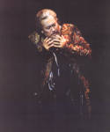

Forums galactiques > Assemblée Galactique : diplomatie officielle > Don Diegue
Pages : 1
| Don Diegue Respect diplomatique : 5  19/05 ETU 21:31 | Score : 5 Détails Don Diegue accoura dans l'assemblée.
Mais, Mais? Où suis je? Que Donc sont devenues les douces plaines du royaume de Castille? Rodrigue, Mon fils, où es-tu? Que s'est-il passé? Mon esprit s'embrouille, mon seul souvenir est cet homme barbu brandissant sa hache devant moi.. Y'a-t-il quelqu'un dans cette assemblée qui puisse m'éclairer? Je vous en prie, aidez moi, il n'y a rien de plus dur que d'être seul dans le désespoir. Je n'ai malheuresement rien d'autre que ma gratitude à vous offrir en échange de ces quelques informations. | ||
| Eiganjo Respect diplomatique : 289  19/05 ETU 21:38 | Score : 6 Détails Don diegue, vous etes ici a l'Assemblée galactique, lieu de discussion entre comandants et le plouc vous ayant repondu en premier n'en est surement pas le gardien.
Ce n'est pas un lieu pour passer offre ou annonce pour cela il y a le marche galactique. ce n'est pas un lieu ou on arrive ivre et ou l'on dit n'importe quoi, pour cela il y a la taverne. L'Assemble galactique peut par exemple servir au gouvernement pour expose un projet de loi ou a une coalition pour declarer la guerre a une autre(Pour declarer la guerre d'un comandant aa l'autre mieux vaut utiliser le MP). En esperant vous avoir sufisement eclairer sur notre belle assemblee. | ||
| Matt Kid Respect diplomatique : 33  19/05 ETU 21:44 | Score : 2 Détails Don Diegue…
(Matt resta quelque instant à réfléchir…quand soudain il eut un flash!) Euréka, mais bien sur ce Don Diegue me dit bien quelque chose, j’en ai entendu parler dans un livre ancien d’une planète ancienne (eh oui tout est vieux !) avec un jeune héros nommé le Cid. Mais au fait c’est votre fils ! Mais alors que faite vous là Don Diegue et où et votre fils ??? | ||
| Don Diegue Respect diplomatique : 5 19/05 ETU 22:36 | Score : 0 Détails Je vous remercie de vos réponses.
Sachez Matt Kid, que ce sont également les questions que je me pose.. Tout est si flou dans ma tête, je me souviens de ce combat, de mon fils qui m'appelle.. Et puis.. Plus rien. Je ne sais pas comment je suis arrivé ici, tout est si.. Différent.. Où sont donc passé nos chevaux, que sont ces étranges machines volantes? Plus le temps avance, plus mon désespoir grandit. | ||
| Le Troll Respect diplomatique : 75  19/05 ETU 22:52 | Score : 0 Détails Bienvenue Don Diegue.
Je pense connaître votre fils, maintenant, il faudrait que je vous connaisse. |
Pages : 1
Forums galactiques > Assemblée Galactique : diplomatie officielle > Don Diegue